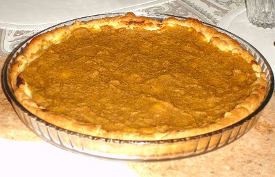

| Zutaten für 4 Personen: | |
| 250 g | Kuchenteig |
| 800 g | Kürbis, gewürfelt |
| 1 dl | Rahm |
| 1 Tl | Mehl |
| 3 El | Zucker |
| 1 Priese | Salz |
| 1 Tl | Zimt |
Vorabend:
Den Kürbis mit wenig Wasser weich kochen und die Nacht lang abtropfen lassen.
Den Kuchenteig auf einem 30cm Blech auslegen. Den Rahm mit einem Teelöffel Mehl mit dem Kürbismus vermischen. Zucker, Salz, Zimt beifügen. Die Füllung auf den Teigboden verteilen und bei 200°C auf der untersten Rille ca. 40 Minuten backen.
Fenner's Kürbisrezepte. Herbert Eigenmann, Code: KÜW
Schmeckt ganz gut. Ist mal was anderes mit der leicht süssen Note. Am 20.9.2009 mit Herbert zusammen zubereitet. RE
@LINKBACK_TAG@ @WAKELOCK@